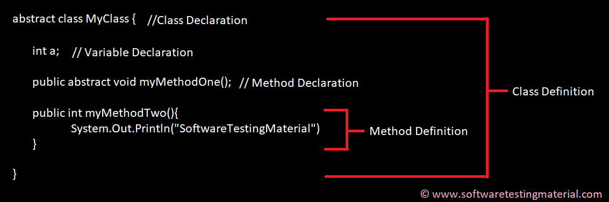

Most Frequently asked Java Interview Questions: study
In this post, we see Core Java Interview Questions for Freshers and Experienced. This post covers Core Java Interview Questions
for Selenium Automation Testers too. This post on Java Interview Questions is prepared with basic and important concepts of Java
with examples for your easy understanding.
1. What is Java?
Java is a programming language and computing platform first released by Sun Microsystems in 1995. There are lots of applications
and websites that will not work unless you have Java installed, and more are created every day. Java is fast, secure, and reliable.
From laptops to datacenters, game consoles to scientific supercomputers, cell phones to the Internet, Java is everywhere!
2. Mention some features of Java?
Some of the features which play important role in the popularity of java are as follows:
Simple: Java is easy to learn. Eventhough Java is based on C++ , it was developed by eliminating poor programming practices of C++.
Object-Oriented: Java is a object oriented programming language. Everything in Java is an Object.
Portable: Java run time environment uses a bytecode verification process to make sure that code loaded over the network doesn't
violate Java security constraints.
Platform independent: Java is platform independent. Java is a write once, run anywhere language. Without any modifications, we can
use a program in different platforms.
Secured: Java is well known for its security. It delivers virus free systems.
High Performance: Java enables high performance with the use of JIT (Just-In-Time) compilers
Multithreaded: Java Multithreaded features allows us to write programs that can perform many tasks simulatenously. Multithreading
concept of Java shares a common memory area. It doesn't occupy memory for each thread.
3. What is the difference between Declaration and Definition in Java?
Declaration: If you just declare a class or method/function or variable without mentioning anything about what that class or
method/function or variable looks like is called as declaration in Java.
Definition: If you define how a class or method/function or variable is implemented then it is called definition in Java.
When we create an interface or abstract class, we simply declare a method/function but not define it.
For clear understanding, check the below image

4. What is an Object in Java?
An object is an instance of a class. Objects have state (variables) and behavior (methods).
Example: A dog is an object of Animal class. The dog has its states such as color, name, breed, and behaviors such as barking, eating, wagging her tail.
public class MyClass{ //Class name (MyClass) declaration
public static void main(String[] args){
MyClass obj = new MyClass(); //Object Creation
}
}
public class MyClass{ //Class name (MyClass) declaration
int a = 9; // Variable declaration
int b = 99;
public void myMethod(){ //Method (myMethod) declaration
int sum=a+b;
}
}
abstract class <class-name>{}
abstract void myMethod();
1
1 2
1 2 3
1 2 3 4
1 2 3 4 5
package softwareTestingMaterial;
public class NumberPattern {
public static void main(String[] args) {
for (int x = 1; x <= 5; x++) {
for (int y = 1; y <= x; y++) {
System.out.print(y+" ");
}
System.out.println();
}
}
}
package softwareTestingMaterial;
public class FibonacciSeries {
public static void main(String args[]) {
int a = 0, b = 1, c, i, count = 10;
// To print 0 and 1
System.out.print(a + " " + b);
// loop starts from 2. We have already printed 0 and 1 in the previous step
for (i = 2; i < count; i++) {
c = a + b;
System.out.print(" " + c);
a = b;
b = c;
}
}
}
package softwareTestingMaterial;
public class ReverseString {
public static void main(String[] args) {
// Using StringBuffer class
StringBuffer a = new StringBuffer("Software Testing Material");
// use reverse() method to reverse string
System.out.println(a.reverse());
}
}
package softwareTestingMaterial;
public class ReverseString {
public static void main(String[] args) {
String input="Software Testing Material";
StringBuilder input1 = new StringBuilder();
input1.append(input);
input1=input1.reverse();
for (int i=0;i<input1.length();i++)
System.out.print(input1.charAt(i));
}
}
package softwareTestingMaterial;
public class LargestValue {
public static void main(String[] args){
int[] arr={28,3,15,9,17,4,23,2};
int val=arr[0];
for(int i=0; i<arr.length; i++){
if(arr[i] > val){
val=arr[i];
}
}
System.out.println("Largest value in the Given Array is "+ val);
}
}
package softwareTestingMaterial;
public class PrimeNumbersOneToHundred {
public static void main (String[] args){
int i =0;
int num =0;
String primeNumbers = "";
for (i = 1; i <= 100; i++){
int counter=0;
for(num =i; num>=1; num--){
if(i%num==0){
counter = counter + 1;
}
}
if (counter ==2){
primeNumbers = primeNumbers + i + " ";
}
}
System.out.println("Prime numbers from 1 to 100 are :");
System.out.println(primeNumbers);
}
}
package softwareTestingMaterial;
import java.util.Scanner;
public class PrimeNumbersOneToN {
public static void main (String[] args){
Scanner scanner = new Scanner(System.in);
int i =0;
int num =0;
String primeNumbers = "";
System.out.println("Enter the value of n :");
int n = scanner.nextInt();
scanner.close();
for (i = 1; i <= n; i++)
{
int counter=0;
for(num =i; num>=1; num--)
{
if(i%num==0)
{
counter = counter + 1;
}
}
if (counter ==2)
{
primeNumbers = primeNumbers + i + " ";
}
}
System.out.println("Prime numbers from 1 to n are :");
System.out.println(primeNumbers);
}
}
package softwareTestingMaterial;
import java.util.Scanner;
public class PrimeNumberVerification {
public static void main(String args[])
{
int i, j, flag = 0;
System.out.print("Enter any number which you want to verify whether it is a prime number or not :");
Scanner s = new Scanner(System.in);
j = s.nextInt();
for( i = 2; i < j; i++){
if(j % i == 0){
flag = 0;
break;
}
else
{
flag = 1;
}
}
if(flag == 1){
System.out.println(j+" is a prime number.");
}
else{
System.out.println(+j+" is not a prime number.");
}
}
}
package softwareTestingMaterial;
public class FibonacciSeries {
public static void main(String args[]) {
int a = 0, b = 1, c, i, count = 10;
// To print 0 and 1
System.out.print(a + " " + b);
// loop starts from 2. We have already printed 0 and 1 in the previous step
for (i = 2; i < count; i++) {
c = a + b;
System.out.print(" " + c);
a = b;
b = c;
}
}
}
package softwareTestingMaterial;
import java.util.Scanner;
public class FibonacciSeriesOne {
public static void main(String[] args){
System.out.println("Enter Iteration to print Fibonacci Series");
FibonacciCheck.checkFibonacci(new Scanner(System.in).nextInt());
}
}
class FibonacciCheck {
public static void checkFibonacci(int number){
int first=0,second=1;
int third=0;
int i=1;
System.out.print("Fibonacci Series upto: "+number+" is ");
System.out.print(first+","+second+",");
while(i<=number){
third=first+second;
System.out.print(third+",");
first=second;
second=third;
++i;
}
}
}